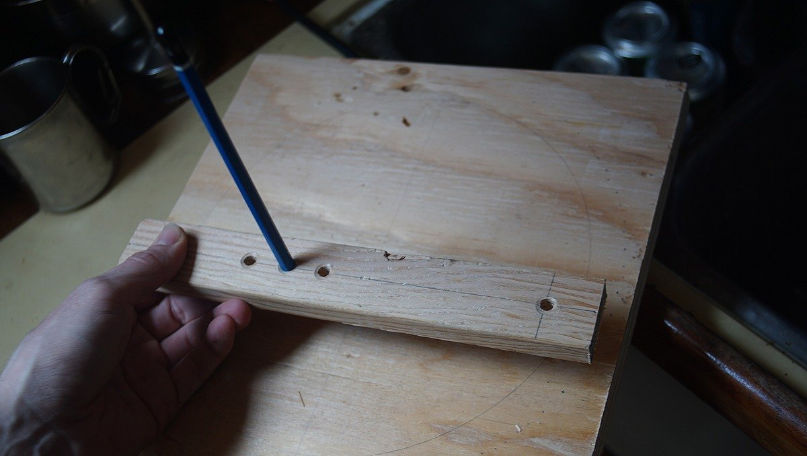

toolbox
Basic tools to make repairs to the various parts of your boat.
Carry only those tools that fit the fasteners that hold the various bits of your boat together and you will have what you need and won’t be burdened by what you don’t. — Don Casey
Starter kit:
- Wire cutters
- Hammer
- A set of wrenches
- Socket wrench kit
- Pliers (needle nose)
- Vise-grips
- Adjustable crescent wrench
- Serrated knife
- Flat and round files
- Yankee-type push drill
- Hex wrench set
- Wire brush (cleaning bolts, metal etc)
- Digital multimeter
- Crimping tool (plus connectors and terminals)
- Many sizes of phillips head, straight-slot screwdrivers (or Multi-Bit Screwdriver)
- Electrical tape
- Stitching awl (to sew heavy materials, fast and with ease)
- Hack saw
Advanced kit add-ons. Many of these are useful if you plan to do most of your own work.
| Tool | General uses | Boat uses |
|---|---|---|
| Grinder | Cut metal, sanding, polish metal or wood etc | Polishing prop, cutting SS pipes or sheeting |
| Dremel | Cutting, sanding, etching, engraving wood or glass | Sharpening tools, drill bits, customizing wood with art, cutting small areas with precision. |
| Power drill | Drill holes through wood, metal, SS etc | Holes for hardware etc. |
| Orbital sander | Sanding | Fairing fibreglass, or rounding edges of wood. |
| Screw extractor (E-Z outs) | Removing broken bolts from wood or metal | Extracting seized bolts in engine body |
| Tap and die kit | Re-threading stripped bolt holes | Engine body hole repair |
| Bolt cutters | Large, cutting through heavy wires or metal | Cutting locks or rigging wires |
| Small hatchet | Cutting, whittling wood or other | Cutting lines, or through walls in an emergency |
| Shears | Heavy duty cutting | Cutting through heavy canvas or rope |
| Pipe wrench | Turning threaded pipes and fittings | Tightening or loosening galley plumbing, or stuffing box |
| Strap wrench (metal band) | Loosening and tightening pipes, fixtures and cylindrical items | Loosening or tightening oil and fuel filters on engine |
| Hand-sewing needles | 5 assorted straight and 2 curved sailmaker's needles, plus assortment of carpet needles | Sail, clothes or canvas repair |
| Caliper | Precious measuring | Measuring inside of pipes, diameters of tubes etc |
| Hole saws | Boring round holes | Cutting holes for wires, or instruments through wood or fibreglass. |
| Small manual pump | Extracting water, oil or sewage water | Oil changes, pumping out bilge water |
| Heat gun | Stripping paint, shrink wrapping, softening adhesives or plastics | Softening hoses for insertion, shrink wrapping electrical connections etc |
| Right angle screwdriver | Tightening or loosening screws with limited clearance | Removing screws from engine |
| Jigsaw | Cutting holes, shapes and curves in wood | Making complex custom wood projects |
| Small bench vice | Holding wood or metal in place for cutting or drilling | — |
We prefer not to have too many overly specialized tools that we only ever use once every 3 years, like a rivet gun, a grease gun or a swage tool. In a boatyard, there is always someone who will have these, and we're certain that they'll be more than happy to lend them to you.